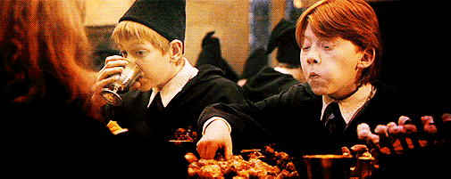

Cauldron Cakes
Description
An easy single serving copycat recipe for the reusable cauldron you can find at the Wizarding World of Harry Potter!
Ingredients
- ¼ cup flour
- ¼ teaspoon salt
- ¼ teaspoon baking powder
- ¼ teaspoon baking soda
- 3 tablespoons unsweetened cocoa powder
- ¼ cup sugar
- 2 tablespoons vegetable oil
- 2 tablespoons buttermilk
- 1 egg
- ¼ teaspoon vanilla
- 2 cups French buttercream store bought or homemade
- ¼ teaspoon red gel food coloring + more as needed for desired color
- ¼ teaspoon yellow gel food coloring + more as needed for desired color
Steps
- Preheat the oven to 375 F. In a small bowl, whisk together the dry ingredients then add the wet ingredients (except frostings and gels) and stir until smooth. Make sure to beat out all the chunks until you get a smooth but thick batter
- Pour the batter into the cauldron until 2/3rds full. DO NOT OVERFILL. You may have 2-3 tablespoons of leftover batter.
- Place on a baking sheet to catch any spills that may happen. Bake for 28-30 minutes, until a toothpick inserted in the center comes out clean. Let cake cool to room temperature then chill while preparing the buttercream.
- If you bought or made plain white buttercream frosting, use the food gels to color the frosting. Place the frosting in the center of a 15×15 square of plastic wrap and roll into a tube. Place both wrapped frostings into a piping bag with a star or drop tip.
- Pipe the frosting in multiple layers to recreate the flames on top of the cauldron cake.
- For best results, chill for 8-10 hours to fully set the frosting. Enjoy, Muggles!